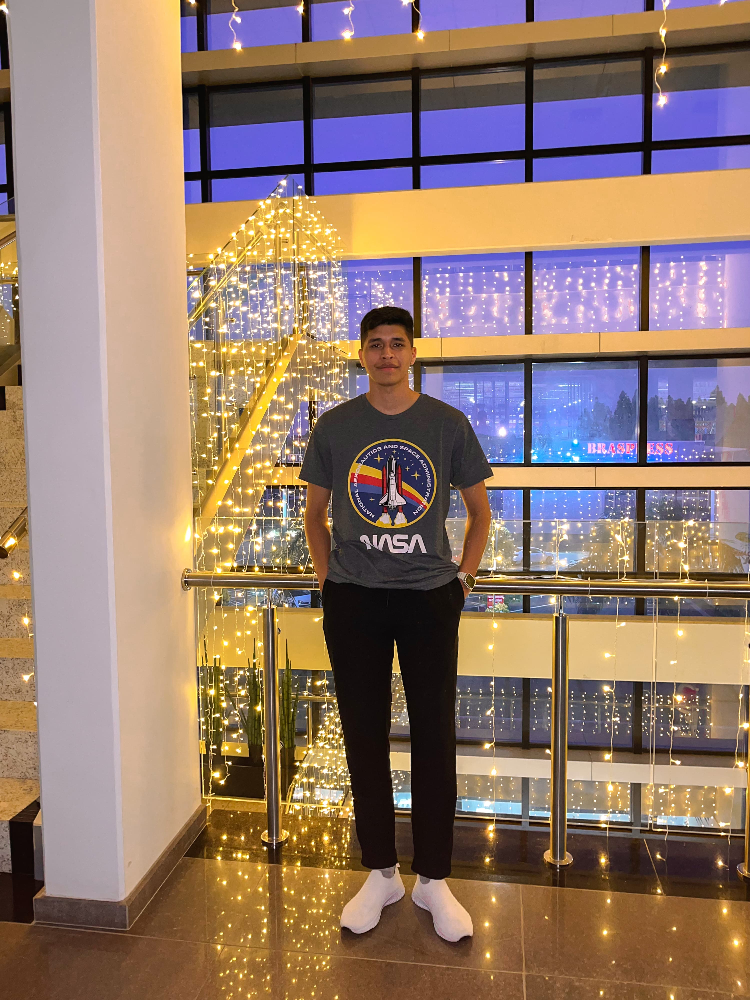

Sobre Migrators
Conoce la historia por trás de Migrators
Nuestro Equipo
Migrators es una plataforma sin fines de lucro creada por Kelvis Escudero, un joven migrante y Analista de Sistemas. Diseñada para ofrecer orientación e información esencial a los migrantes venezolanos en Brasil, Migrators facilita los procesos de documentación, integración y adaptación. Nació de la necesidad de combatir la desinformación sobre cómo realizar trámites migratorios al llegar a Brasil. Con mi experiencia en migración a través de tres países, quiero asegurar que los migrantes puedan dar sus primeros pasos con confianza y sin complicaciones. En el futuro, aspiramos a expandir nuestro apoyo a migrantes en otros países.

Kelvis Escudero
Analista de Sistemas
CEO. Migrators